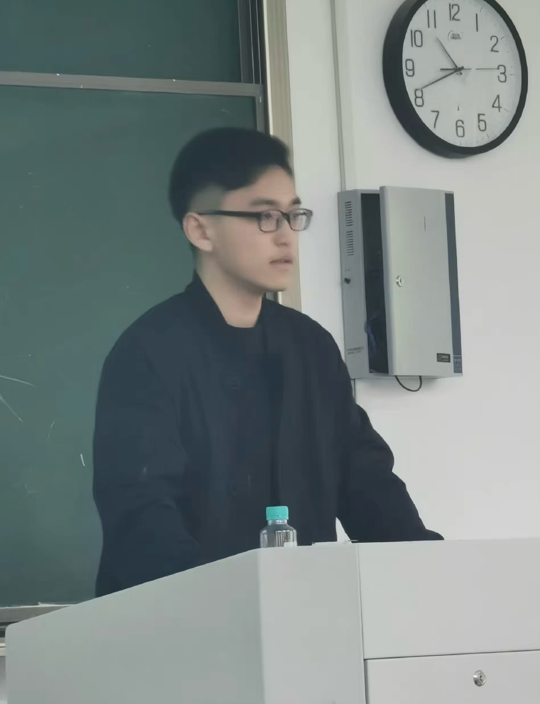

|

|
This website page records information about my personal educational background and thoughts on value investment. If you are also interested in value investment and the fundamental analysis of specific companies I cover, please do not hesitate to contact me directly via email. Thanks. I am a Graduate Student in the Department of Mathematics at the National University of Singapore (NUS). I have a background of study in mathematics, statistics and computer science. I am broadly interested in value investment and capital allocation. I invest across three major stocks exchanges: China, Hong Kong, and The United States of America. I started my investment career at the age of 19 and opened my personal securities account at the age of 20. I am a firm believer that for value investors like us, time is our friend. I am willing to buy a great undervalued company at a reasonable price and hold its shares for a long term. Holding shares in a company is equivalent to buying into the company itself. So, I define myself as a businessman and investing is doing business across industries, except that the company is run under a manager you trust. Between Sep '19 to Jun '22, I was an undergraduate student at Soochow University. I obtained my Bachelor’s degree in Statistics and a double degree in Computer Science from Soochow University. My native language is Chinese and my second language is English (Fluent). The programming languages and applications in which I am familiar with are: MATLAB, R, Python, LATEX, C, SQL, Lingo, EXCEL, SPSS, SAS. |